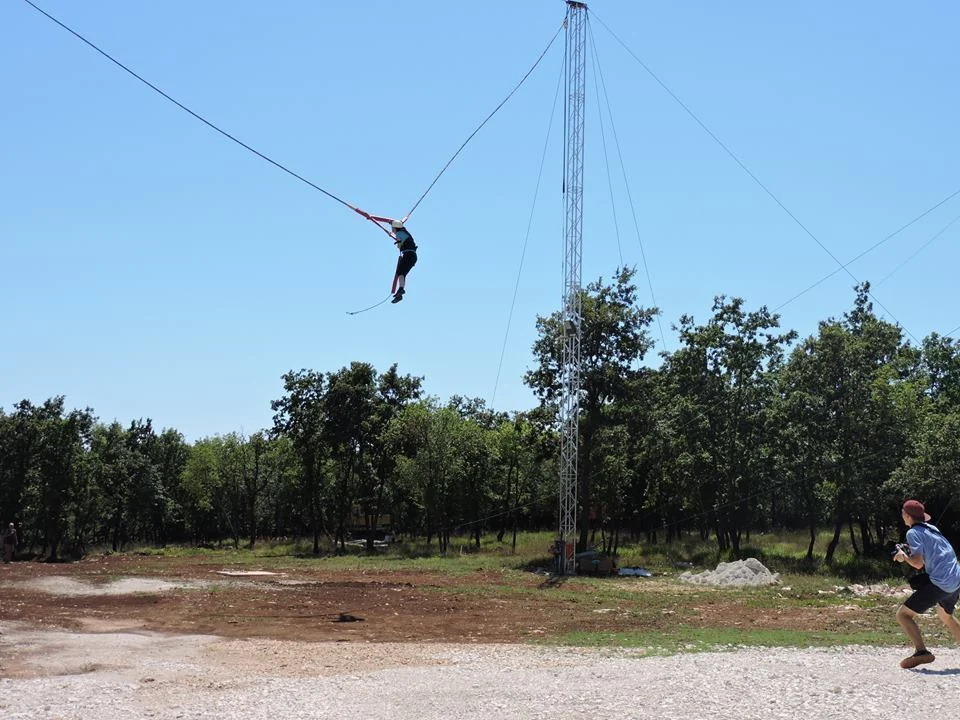

Human Catapult
Feel race-car acceleration in a single second on Croatia's only Human Catapult — one of only a handful of horizontal catapult rides in Europe. Strap in, hold the release, and go from 0 to around 100 km/h quicker than an F1 car off the line.
Staff fit your harness, run a full safety briefing, and supervise every launch. More than 9,000 catapults have been completed at Glavani Park and almost every guest loves it. Minimum age, height and weight limits apply — ask at the ticket desk or call ahead if you are unsure.
Human Catapult video
Feel 100 km/h in one second on Croatia's only Human Catapult
The Human Catapult at Glavani Park is one of only a handful of horizontal catapult rides in Europe. You lie in a secure frame while elastic cables build tension — then release sends you from standstill to around 100 km/h in roughly one second. This is not a ride that lasts minutes: it is a moment of pure adrenaline that visitors remember for years after leaving Istria.
More than 9,000 launches have been completed at Glavani Park — and almost every guest leaves smiling (and sometimes shouting with exhilaration). If you want something you will not find at an average family park in Croatia, this is it.
Visitor photos & videos — Human Catapult

What happens when you strap in
Staff fit your harness, run a full safety briefing, and supervise every launch. You lie in the frame while the cables tension; you hold the release handle or the instructor controls the moment, depending on the setup. When the cables release, you feel race-car acceleration in a single hit — from standstill to around 100 km/h quicker than an F1 car off the line. Then you decelerate smoothly as the system brings you back. The whole process, including briefing and queue time, typically takes 15–20 minutes per group.
Is the Human Catapult scary?
For most people — no. Many visitors arrive nervous and leave thrilled. The sensation is intense but brief: there is no long hang time like on some fairground rides. If you have done a zipline or swing before, the catapult is often the next logical step. If you are completely new to adrenaline activities, staff explain every step and you can watch others go first. Teenagers and adults who meet the height and age requirements usually love it.
How fast does it go?
The launch takes you from 0 to around 100 km/h in roughly one second — quicker acceleration than a Formula 1 car from a standing start. That is what makes the catapult unique: not a gradual build-up, but an instant rush. Many guests say it feels more exhilarating than a bungee jump because you feel the acceleration immediately rather than after a long drop.
Is it safe?
Yes. Every launch is instructor-led. Equipment is CE-certified, checked daily, and you receive a full briefing and harness check before release. The catapult is engineered for controlled launch and deceleration — you are not free-falling like on a bungee. Read more about our standards on the safety page.
Who can ride? Age, height and weight
Minimum age, height and weight limits apply — ask at the ticket desk or call ahead if you are unsure. Staff check every guest before launch and will advise if the activity is not suitable. Younger children typically do not meet the requirements; older teens and adults who fit the limits usually enjoy the ride.
How long does the experience take?
The launch itself lasts seconds, but the sensation — acceleration quicker than an F1 car — stays with you. Many guests say it is more exhilarating than a bungee jump because you feel the rush immediately. Allow time for briefing, harness fitting and queueing: plan on 15–20 minutes per group at the catapult.
Can spectators watch?
Yes — and it is part of the fun. Friends and family can watch from the viewing area with drinks and ice cream while they wait for your turn. It is often as entertaining to hear the reaction after launch as it is to ride. Perfect for family groups where only some want the catapult.
Prices and packages that include the catapult
The Human Catapult is €40 per person as a single activity. It is also included in whole-park packages with catapult (€60 children / €70 adults), the Human Catapult + High Swing combo, and family packages for 4 or 5 people. See packages and prices for the full overview — whole park incl. catapult €60–70 (children/adults), whole park without catapult €40–50, training route + 2 games €20–30, family packages from €150.
Can I book the catapult on its own?
Yes. Choose the Human Catapult as a single activity (€40) on the booking page or at the park ticket desk. Online booking covers up to 10 people; call ahead for larger groups.
Can I film my ride?
Yes — and many guests do. You will need a friend to film or a securely attached action camera. We cannot be held responsible for damage to your personal equipment, so use reliable mounting. The launch looks spectacular on video.
When is the best time to go?
Any time during park opening hours (9 AM–5 PM, last entry 3 PM). The catapult runs all day and queues vary — morning and afternoon are both good. With more than 9,000 launches completed, almost every guest leaves happy.
What to combine with the catapult
Most visitors pair the catapult with the 12.5 m High Swing, Valley Zipline (Big Zipline), or 20 m Drop for a full adrenaline day. Browse all park activities, read our FAQ, or see things to do in Istria to plan your trip.
Planning your visit
Glavani Park is at Glavani 10, Barban — about 30 minutes from Pula, 45 minutes from Rovinj and Rabac, and 50 minutes from Poreč. Free parking is on site. The park is open daily 9 AM–5 PM with last entry at 3 PM, so allow three to four hours for the whole park.
For Human Catapult and our other attractions you can book online for groups up to 10 or call ahead for larger parties. See packages and prices — whole park incl. catapult €60–70 (children/adults), whole park without catapult €40–50, training route + 2 games €20–30, family packages from €150.
Safety and equipment
Every activity at Glavani Park is instructor-led. Equipment is CE-certified and checked daily. You receive a harness, helmet, and clear briefing before you start. Read more on our safety page.
Packages from €20 children / €30 adults · book online for up to 10